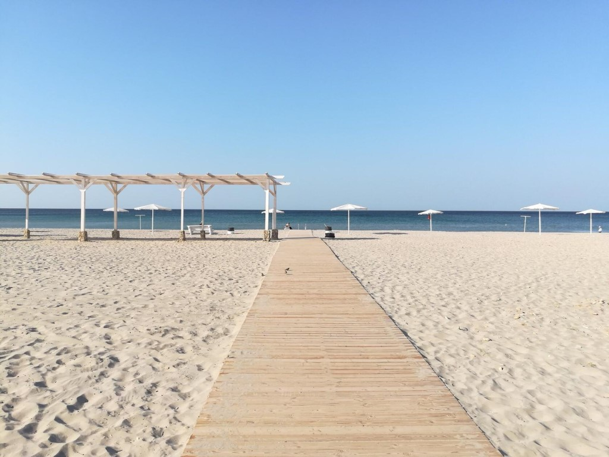
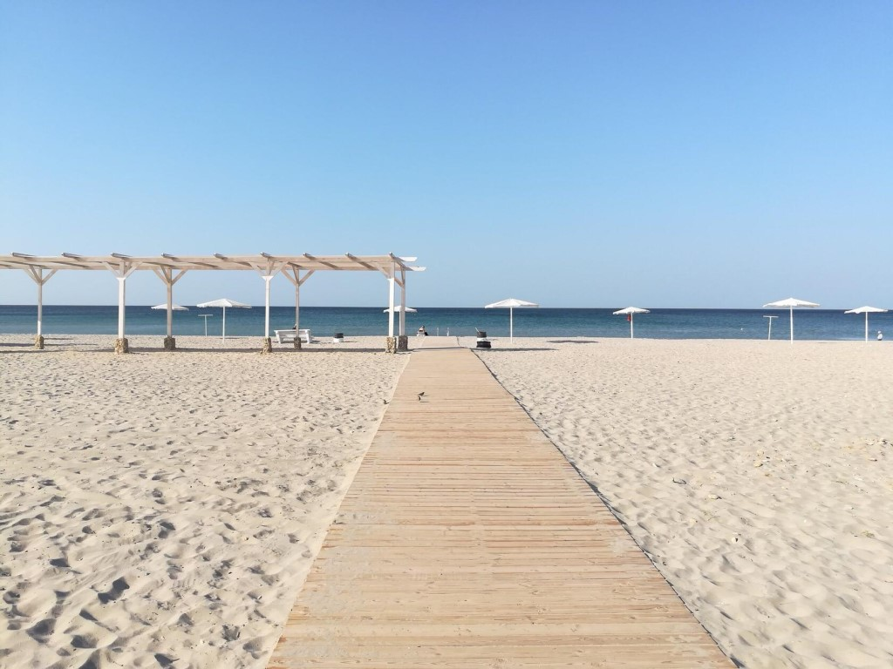

Открой Крым вместе с нами
Выберите город и узнайте всё: жильё, еда, отдых, туризм
Найти город 

Популярные направления


Севастополь
Ялта
Симферополь
Алушта
Судак
Евпатория
Почему выбирают МойКрым.рф
Полный путеводитель
Все города Крыма: жильё, еда, экскурсии.
Актуальная информация
События, цены и советы для туристов.
С любовью к Крыму
Создано местными для незабываемого отдыха.